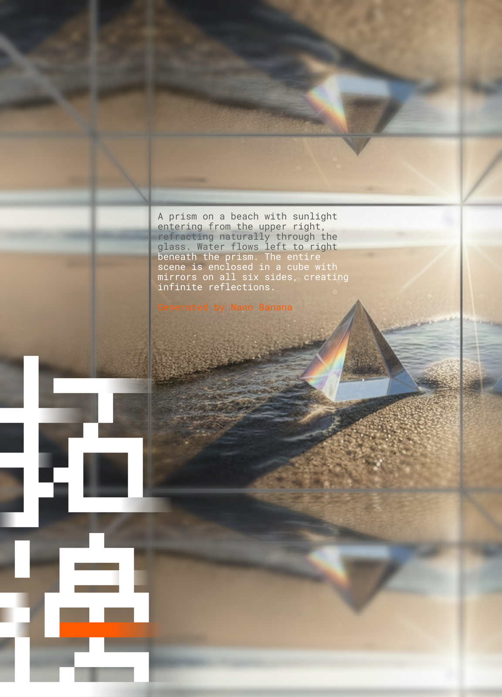

這是臨時網站！敬請期待2026學習分享會網站開發完畢！
2026學習分享會將於2026年1月開展！

「學習分享會」是由數位實驗高中師長與學生一同舉辦的展覽，在今年的主題「拓邊」中，將有以下諸多課程、學生經驗的展覽與分享，圍繞著這幾個主題：
- 學習力：展現學生對於各種知識、事務、經驗的學習！
- 影響力：展現學生對於無論自己、他人、社會、環境到世界的影響！
- 移動力：不僅體現學生在地圖上的移動，更是展現學習的彈性，拓展邊界！
展覽時間：2026/1/18-1/19
展覽地點：臺北市數位實驗高中 吉林學習基地（4F-5F）